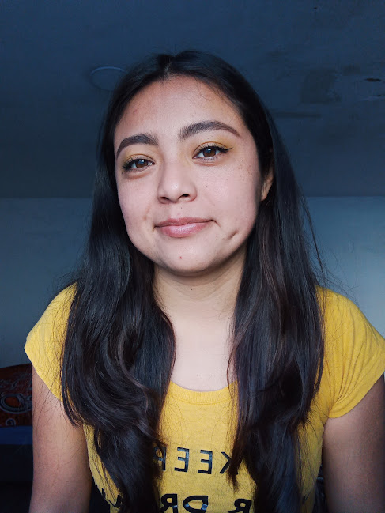

¿Quién soy?

Mi nombre es Ruth Marin Martinez, soy estudiante de la licenciatura de Diseño Gráfico, estoy cursando el séptimo semestre, tengo 21 años y soy de Puebla, Pue
Me gustan los colores que tengan tonalidad fuerte, me gustan los perros, me gustan las plantas, me gustan los alimentos dulces y salados, me gusta leer, me gusta brincar la cuerda y me gusta disfrutar de mi familia
Soy una persona sociable, me gusta bailar, pintar y cocinar.